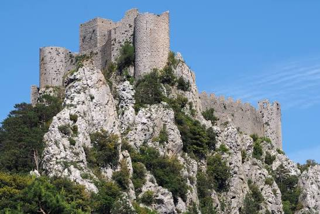
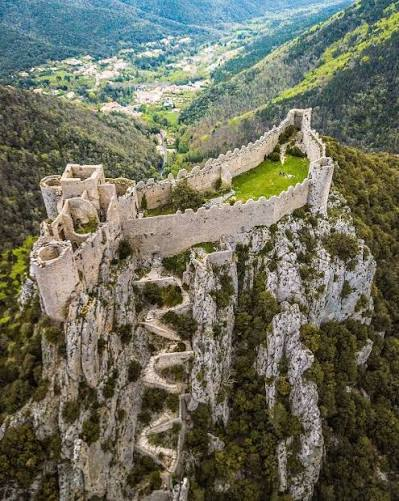

Château de
Puilaurens


⟹ Châteaux & Patrimoine cathare ⟸

Mont Ardu, un nom attesté dès 958. Le château de Puilaurens se dresse sur le Mont Ardu, un promontoire dont le nom apparaît pour la première fois en 958 dans une charte du roi Lothaire, confirmant la donation faite par Sunifred II de Cerdagne, seigneur du Fenouillèdes, à l'abbaye Saint-Michel-de-Cuxa. Ce document mentionne déjà la présence d'une église Saint-Laurent servant de refuge fortifié et perché dès l'époque carolingienne — la trace la plus ancienne d'un site défensif à cet emplacement, bien avant que le nom de Puilaurens ne s'impose.
Les Catala, premiers châtelains connus (XIIIe siècle). Le premier châtelain connu de Puilaurens est Pierre Catala, qui apparaît comme témoin dans les actes de Guillaume de Peyrepertuse dès 1217. En 1229, c'est Guillaume de Peyrepertuse lui-même qui commande le château ; puis, en 1242, la place est tenue par Roger Catala, fils de Pierre — signe d'une transmission familiale du commandement typique des châtellenies féodales du Fenouillèdes.
Un refuge pour la dissidence cathare (1241-1246). Comme plusieurs places fortes de la région, Puilaurens sert de refuge aux cathares fuyant la répression. En 1241, le diacre cathare du Fenouillèdes Pierre Paraire y séjourne ; plusieurs « parfaits » et « parfaites » y sont encore hébergés entre 1245 et 1246, dans les années qui suivent immédiatement la chute de Montségur — preuve que la dissidence religieuse survit, de façon clandestine, bien après le grand bûcher de 1244.
Chabert de Barbaira, dernier défenseur de la cause cathare. Chabert de Barbaira, également châtelain de Quéribus et figure majeure de la résistance méridionale, est le dernier commandant à défendre Puilaurens au nom de la cause cathare et du pouvoir aragonais. Isolé et sous pression, il finit par rendre la place la même année que Quéribus, en 1255, mettant fin à l'indépendance du site.
1255 : Saint Louis ordonne la fortification royale. En août 1255, Louis IX ordonne l'évacuation du château et sa fortification par la Couronne. Le traité de Corbeil, signé en 1258 avec le roi d'Aragon, confirme la possession royale du site et repousse la frontière plus au sud, faisant définitivement de Puilaurens une place forte du royaume de France.
Un chantier royal mené tambour battant. Dès 1258, la garnison compte vingt-cinq sergents, entretenus sur les comptes royaux. Un inventaire de 1263 mentionne des outils d'extraction, signe que le chantier de fortification est alors toujours en cours. Vers 1260, selon plusieurs sources, Puilaurens accueille la plus importante garnison de toute la frontière méridionale, placée sous les ordres d'un capitaine responsable devant le sénéchal de Carcassonne.
Une architecture parfaitement adaptée au relief escarpé. Le château se compose de deux enceintes jumelées : la première s'organise autour d'une vaste cour, la seconde, plus réduite, comprend une tour carrée. L'ensemble est défendu par quatre tours rondes, des courtines crénelées épousant la crête rocheuse, et un dispositif d'accès en chicane particulièrement dissuasif : l'assaillant doit gravir un escalier en lacets sous le feu des défenseurs avant de franchir la porte dite « assommoir », équipée d'un orifice permettant de faire pleuvoir projectiles ou liquides brûlants sur les intrus.

Le plus méridional des châteaux du roi de France. Pendant près de quatre siècles, Puilaurens reste la forteresse la plus méridionale du royaume de France, verrouillant l'accès aux Fenouillèdes face à la couronne d'Aragon puis à l'Espagne. Cette position en première ligne lui vaut d'être la cible de plusieurs incursions entre le XVe et le XVIIe siècle : en 1635, en pleine guerre franco-espagnole, des troupes espagnoles s'en emparent temporairement, avant que la place ne revienne sous contrôle français.
1659 : le traité des Pyrénées met fin au rôle stratégique. Le traité des Pyrénées de 1659 déplace la frontière franco-espagnole jusqu'aux crêtes pyrénéennes, où elle se trouve toujours aujourd'hui. Puilaurens, comme les autres « fils de Carcassonne », perd d'un coup toute utilité militaire. Une faible garnison de vétérans occupe encore un temps la citadelle avant son abandon progressif.
Abandon et légende de la Dame Blanche. Mal entretenu dès la fin du XVIIe siècle, le château est définitivement abandonné à la Révolution française. Une légende locale tenace raconte que la Dame Blanche — que la tradition identifie à une petite-nièce de Philippe le Bel — reviendrait, les nuits pâles, promener ses voiles vaporeux sur le chemin de ronde des remparts démantelés.
1902 : le classement au titre des monuments historiques. Puilaurens est classé monument historique en 1902. Malgré la disparition de certaines pierres de taille — arrachées notamment sur les créneaux et les encadrements de fenêtres et de portes — et la destruction des bâtiments qui occupaient jadis la cour, le château se distingue aujourd'hui par un remarquable état de conservation. Il appartient désormais à la commune de Lapradelle-Puilaurens.
L'un des « cinq fils de Carcassonne ». Avec Aguilar, Peyrepertuse, Quéribus et Termes, Puilaurens forme historiquement le groupe des « cinq fils de Carcassonne », ces places fortes placées sous l'autorité du sénéchal royal pour protéger la frontière méridionale du royaume. Par temps clair, le panorama depuis ses tours laisse deviner les silhouettes de Quéribus et Peyrepertuse, ses deux voisins les plus proches dans ce dispositif défensif commun.
2026 : l'entrée au patrimoine mondial de l'UNESCO. Depuis le 26 juillet 2026, le château de Puilaurens est inscrit, aux côtés de Carcassonne, Aguilar, Lastours, Montségur, Peyrepertuse et Quéribus, sur la Liste du patrimoine mondial de l'UNESCO au titre des « Forteresses royales capétiennes du Languedoc ». Le site propose désormais, en lien avec cette reconnaissance, des itinéraires de découverte associant Montségur, Quéribus et Peyrepertuse, pour mieux comprendre l'architecture et l'histoire communes de ce réseau de sentinelles royales.
Pour approfondir la lecture du monument, voici quelques repères historiques et architecturaux complémentaires.
Un site plus ancien que son nom : la mention de 958 concerne le Mont Ardu et une église-refuge carolingienne antérieure de plusieurs siècles au château fort visible aujourd'hui, dont l'essentiel remonte aux XIIe et XIIIe siècles.
Jamais pris d'assaut pendant la croisade : contrairement à Termes ou Montségur, Puilaurens n'a jamais été conquis par la force durant la croisade albigeoise ; sa reddition en 1255 résulte d'un rapport de force politique et non d'un siège militaire abouti.
Une frontière tenue jusqu'au XVIIe siècle : à la différence de châteaux tombés en désuétude dès le XIVe siècle, Puilaurens reste activement défendu jusqu'au traité des Pyrénées de 1659, en raison de sa position de verrou méridional face à l'Espagne.
Documentation complémentaire
Source de référence : consulter la ressource officielle